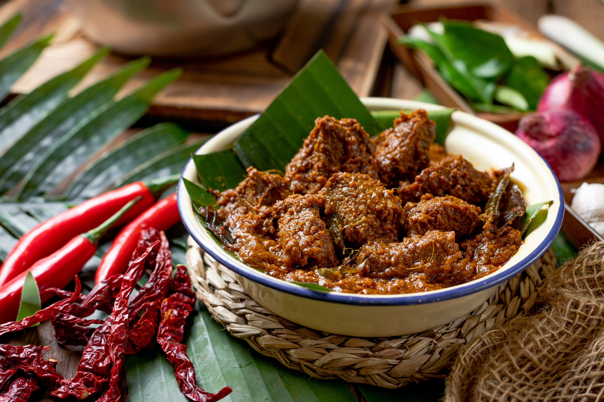

What is Rendang?
Rendang is a delicious beef stew that originated in Indo. It was brought to the Philippines by the Maranao people and can be found in various places in Mindanao and even downtown Quiapo in Manila.
Filipino rendang is drier than the original recipe in Indonesia. It also uses palapa (a Maranao condiment made of toasted coconut and other ingredients) combined with muscovado sugar and is cooked similar to that of adobo. The resulting dish is sweet, spicy, and delicious.
Whether youre a fan of the original rendang or youre trying this dish for the first time, Filipino rendang is one of the Mindanao food you shouldn t miss.
Ingredients :
4 candlenuts
12 cloves chopped garlic
300 g red chili (Serrano chili/pepper)
250 g onions
50 g ginger
50 g galangal
25 g ground turmeric or 50g of fresh turmeric
1½ tsp ground coriander
1 tbsp salt
1 tsp sugar
4 green cardamom pods
11/2 tsp cumin seeds
10 cloves
Instructions :
Cut the beef into 4 cm squares, half cm thick. Do not cut the beef too small as the meat can break into smaller pieces during cooking.
Blend all the ingredients in (B), set the blend aside.
Remove the green section and the outer sheath of the lemongrass. Use only the white portion. Bash them so that the lemongrass to ensure the release of the flavor.
Heat up the vegetable oil in a wok. Saute the spice paste (B) over low heat until aromatic.
Add the coconut cream, turmeric leaves, kaffir lime leaves, asam keping and lemongrass into the wok.
Add the beef and cook over medium heat. Bring the coconut milk to a boil.
Once it is boiled, continue simmer over low heat. Add water from time to time when the stew is about to dry.
Cook until the beef absorbs the flavor of the spices thoroughly and the color turns to dark brown. It will take about three hours.
Served with rice or bread.